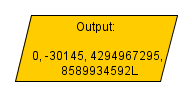
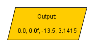
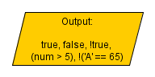
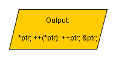
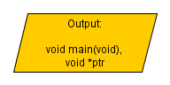

Data Type
Definition
In programming a data type is a set of values and predefined operations to manipulate these values.
..I don't like such "tasteless" definitions, so lets explain this with several examples. In the real world we have different types of information
- alphabet(a set of characters)
- names(a sequence of characters)
- ages(integer numbers)
- prices(real numbers)
- salaries, calories, all kinds of measures and so on.
Do you learn better from video?
Learn faster with deeper understanding! |
 |
The computer world is nothing, but a reflection of the real world. That's why in most programming languages we use different data types to represent the information.
Data types' characteristics
Each data has its own specifics. While a type can be very good for a given situation it could not work well in another. So it is good to know the different options that we have - their characteristics, advantages and disadvantages. Before looking deeper into each of them we will see their parameters: purpose, size, range, signed, precision.
Purpose
Obviously the numeric types are there to represent numbers. Depending on the size they may vary from vary small to very big range. There are also types to represent only integer numbers and others – for real numbers. Other data types represent a single character, a sequence of characters, a boolean(truth) value.
Size
Varying on the application different data requires different size to be stored on. Usually we measure it in bytes or shortly “B”. Note that this is a capital B. The lowercase abbreviation “b” means “bits”. One bit is the smallest portion of information that a computer can handle. 8 bits form one byte and this is the measure that we use – byte (B).
Range
(Only for numeric types) Depending on the size the types could work with numbers from different ranges. If you try to store number, which is out of the range, an overflow will occur and data will be lost. It is good to optimize your programs. If you don’t need to use a big size(range) type, you should use the smaller(shorter) version. Of course if you are unsure if the type is big enough – take the bigger range. It is better to take several bytes more than lose information, because of an overflow.
Signed or Unsigned
When signed, the type can represent both positive and negative numbers. Unsigned types work only with positive numbers and they can hold numbers twice bigger than signed. This applies to numeric types and could depend on the programming language. Some languages (like Java) don’t support unsigned numbers. Other languages (like C) have both signed and unsigned types. This allows better optimization.
From computer side the difference is in the meaning of the most significant bit(MSB). With signed numbers it is the sign. MSB=1 means a negative number (- minus sign) and MSB=0 means a positive(+ plus sign). If the type is unsigned the sign is fixed to plus and the MSB is just a part of the saved value.
Precision
The precision applies only to real numeric types. This is the number of digits after the decimal sign that could be remembered.
Data types
What is a literal? - It is a source code, representing a given value. It sounds more complicated than it is ;). In the blocks below you will see different examples of literals for each type.
*The blocks for array, pointer and user defined are not clearly literals, they are just examples.
Some of the most used data types are:
|
- Integer – contains integer numbers. There are several integer types with different size and range. By default they are signed. We use them to store information like quantities, sizes, period of time etc. |

|
|
- Real – Also called "floating point numbers", contain real numbers with some precision. It depends on the type we use. By default is signed. You can use these to save price, salaries and others. |
 |
- Character – Saves a single symbol. It is represented with a code. Languages like C, C++ use one byte code, and others like Java, C# use two bytes code.
Character values are enclosed by apostrophes - 'character'. A character type can be used when reading the input from the keyboard symbol by symbol.
There are special characters called escape sequences. They begin with a backslash '\'. Such symbols are new line('\n'), null('\0') and others.
- String – represents a sequence of characters. It does not have a fixed range. Usually it takes as many bytes as needed to save the information.
String values are enclosed by quotation marks - "string". Use this to store names, words or any other sequence of
characters. It can also contain escape sequences (see character data type above).
|
|

|
- Array. An array is not really a new type. It is a sequence of many values of the same type. They are called elements. Each element has an unique index number. The first element has index=0, the second 1...
To access an element from the array use the name of the array and the element index(the third element of array “myArray” is : myArray[2]). Arrays are useful when dealing with many records of similar information. For instance it is convenient if you want to save the names for a given number of people.
|
|

|
- User defined – When solving a complex task it is often useful to define our own data type. For instance : you want to save information about students. It will be much more convenient if there is a “student” type and all information for one student is kept in one place and accessed with one variable. For this reason most of the computer languages offer this functionality. In C these are structures and unions. In object oriented languages this is done with classes.
|
- Void - "void" means “no data type”. Usually this is used with sub-programs(methods) that don’t return a result. Other usage are void pointers. |

|
Homework
1. Answer the questions
a)Integer numbers are by default signed or unsigned?
b)What is precision of a real number?
c)What are the symbols, enclosing a character literal?
d)What symbol encloses a string literal?
2. Write two different literals of each data type.
|
Previous: Flow chart symbols |
Next: What is a variable |
Do you learn better from video?
Learn faster with deeper understanding! |
|
C Programming › Beginners' tutorial › Data type
Tutorial Contents:
1)Learn
Computer Programming
2)Software Development Process
3)Flow
Chart
4)Flow
Chart Symbols
5)Data
Type
6)What is a variable
7)Math
Operators
8)Logical
Operators
9)Loops
10)Nested Loops
11)Arrays
12)Multidimensional arrays
13)Programming Questions
|
Did this help? Support me with your vote ;-) |
|
|
|
Did this help? |
|
|